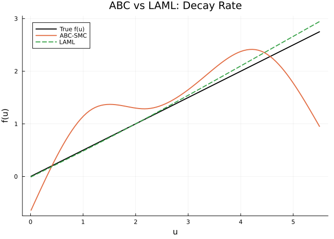
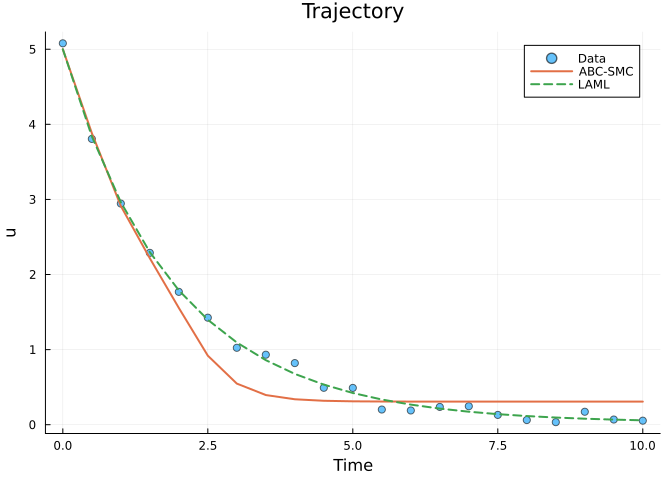
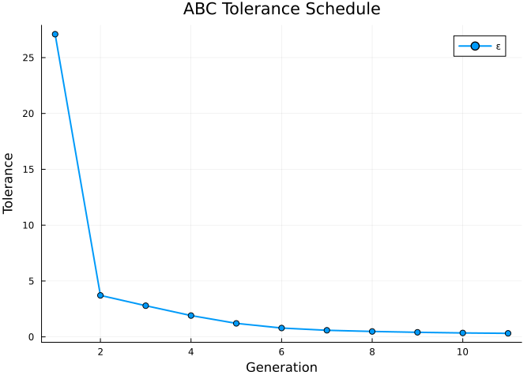
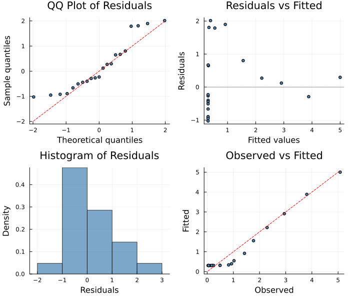

Likelihood-Free Inference with ABC-SMC
Overview
The ABCSolver implements Approximate Bayesian Computation with Sequential Monte Carlo (ABC-SMC), a likelihood-free inference method. Instead of evaluating a likelihood function, ABC:
- Samples parameter proposals from a prior (or previous generation)
- Simulates the model forward with each proposal
- Compares simulated data to observed data using a summary statistic (e.g., RMSE)
- Accepts proposals whose simulations are sufficiently close to the data
ABC-SMC refines the tolerance $\epsilon$ over generations, progressively concentrating particles near the posterior.
using PartiallySpecifiedModels
using OrdinaryDiffEq
using Plots
using Statistics
using Random
Random.seed!(42)TaskLocalRNG()Exponential Decay with Unknown Rate
function decay!(du, u, p, t)
du[1] = -p.f(u[1])
end
sol_true = solve(ODEProblem(decay!, [5.0], (0.0, 10.0), (; f=x -> 0.5*x)),
Tsit5(); saveat=0.5)
t_data = collect(sol_true.t)
data_vals = [sol_true.u[i][1] + 0.1 * randn() for i in 1:length(t_data)]
data_matrix = reshape(max.(data_vals, 0.01), :, 1)21×1 Matrix{Float64}:
5.078835560160429
3.806018088128271
2.945273887584674
2.2885047067990136
1.7691735600800715
1.4252661174556691
1.0243509034466096
0.9320342398810462
0.8205364655182532
0.4915817263273738
⋮
0.18959720135788585
0.23682834647207912
0.2462247887066572
0.13050069661823208
0.06210245253453309
0.033897182674689066
0.17249536167482693
0.06894633070068673
0.053785164971568336ABC-SMC Fit
uf = BSplineApproximator(:f, (0.01, 5.5), 6)
prob = PSMProblem(decay!, [5.0], (0.0, 10.0), [uf];
data_times=t_data, data_values=Float64.(data_matrix),
obs_to_state=[1], known_params=NamedTuple())
sol_abc = solve(prob, ABCSolver(n_particles=500, n_generations=10,
prior_scale=2.0, verbose=false))
sol_laml = solve(prob, LAML(maxiters=50, verbose=false))┌ Warning: ABC-SMC gen 1: effective sample size 23.6 < N/2 = 250.0; importance weights are highly concentrated
└ @ PartiallySpecifiedModels ~/Projects/psm/PartiallySpecifiedModels.jl/src/abc_solver.jl:94
┌ Warning: ABC-SMC gen 2: effective sample size 33.2 < N/2 = 250.0; importance weights are highly concentrated
└ @ PartiallySpecifiedModels ~/Projects/psm/PartiallySpecifiedModels.jl/src/abc_solver.jl:94
┌ Warning: ABC-SMC gen 3: effective sample size 8.2 < N/2 = 250.0; importance weights are highly concentrated
└ @ PartiallySpecifiedModels ~/Projects/psm/PartiallySpecifiedModels.jl/src/abc_solver.jl:94
┌ Warning: ABC-SMC gen 4: effective sample size 29.8 < N/2 = 250.0; importance weights are highly concentrated
└ @ PartiallySpecifiedModels ~/Projects/psm/PartiallySpecifiedModels.jl/src/abc_solver.jl:94
┌ Warning: ABC-SMC gen 5: effective sample size 32.5 < N/2 = 250.0; importance weights are highly concentrated
└ @ PartiallySpecifiedModels ~/Projects/psm/PartiallySpecifiedModels.jl/src/abc_solver.jl:94
┌ Warning: ABC-SMC gen 6: effective sample size 62.4 < N/2 = 250.0; importance weights are highly concentrated
└ @ PartiallySpecifiedModels ~/Projects/psm/PartiallySpecifiedModels.jl/src/abc_solver.jl:94
┌ Warning: ABC-SMC gen 7: effective sample size 62.3 < N/2 = 250.0; importance weights are highly concentrated
└ @ PartiallySpecifiedModels ~/Projects/psm/PartiallySpecifiedModels.jl/src/abc_solver.jl:94
┌ Warning: ABC-SMC gen 8: effective sample size 112.2 < N/2 = 250.0; importance weights are highly concentrated
└ @ PartiallySpecifiedModels ~/Projects/psm/PartiallySpecifiedModels.jl/src/abc_solver.jl:94
┌ Warning: ABC-SMC gen 9: effective sample size 111.6 < N/2 = 250.0; importance weights are highly concentrated
└ @ PartiallySpecifiedModels ~/Projects/psm/PartiallySpecifiedModels.jl/src/abc_solver.jl:94
┌ Warning: ABC-SMC gen 10: effective sample size 154.7 < N/2 = 250.0; importance weights are highly concentrated
└ @ PartiallySpecifiedModels ~/Projects/psm/PartiallySpecifiedModels.jl/src/abc_solver.jl:94
PSMSolution((f = [-0.007159068246233605, 0.5385691884496616, 1.1097360362084392, 1.710594267245719, 2.3258423947390248, 2.943764099504231]), 0.046907115499497096, 0.09121640421590996, 2.6255305543140093, [0.010661692650401958], [5.0; 3.8396649976797756; … ; 0.06789123220923896; 0.05842740902466895;;], [5.078835560160429; 3.806018088128271; … ; 0.06894633070068673; 0.053785164971568336;;], [0.0, 0.5, 1.0, 1.5, 2.0, 2.5, 3.0, 3.5, 4.0, 4.5 … 5.5, 6.0, 6.5, 7.0, 7.5, 8.0, 8.5, 9.0, 9.5, 10.0], Dict{Symbol, Any}(:f => DataInterpolations.CubicSpline{Vector{Float64}, Vector{Float64}, Vector{Float64}, Vector{Float64}, Vector{Float64}, Vector{Float64}, Float64}([-0.007159068246233605, 0.5385691884496616, 1.1097360362084392, 1.710594267245719, 2.3258423947390248, 2.943764099504231], [0.01, 1.108, 2.206, 3.304, 4.402, 5.5], Float64[], DataInterpolations.CubicSplineParameterCache{Vector{Float64}}(Float64[], Float64[]), [0.0, 1.098, 1.0979999999999999, 1.0979999999999999, 1.0980000000000003, 1.0979999999999999], [0.0, 0.02462367630476875, 0.028107020038384875, 0.010715088767001562, 0.0006476649367354296, 0.0], DataInterpolations.ExtrapolationType.Linear, DataInterpolations.ExtrapolationType.Linear, FindFirstFunctions.Guesser{Vector{Float64}}([0.01, 1.108, 2.206, 3.304, 4.402, 5.5], Base.RefValue{Int64}(1), true), false, false)), (V_beta = [0.06417440872524004 -0.021806873222363455 … 0.023351544292864873 0.053628070758673894; -0.021806873222363455 0.06790115097966348 … -0.09678112246329461 -0.17211995620126763; … ; 0.023351544292864873 -0.09678112246329461 … 0.9954497421024228 1.7437679919327813; 0.053628070758673894 -0.17211995620126763 … 1.7437679919327813 3.8060125349357232], sigma2 = 0.004964301390336253, converged = true, iterations = 9, reason = :converged_tol, laml_failures = 0, criterion = :working, laml = 48.57046341656602, stationarity = 0.02484953408431123, smoothing_advanced = true))Recovered Function
f_abc = sol_abc.unknown_functions[:f]
f_laml = sol_laml.unknown_functions[:f]
f_true(u) = 0.5 * u
u_grid = range(0.01, 5.5, length=100)
p1 = plot(u_grid, f_true.(u_grid), label="True f(u)", lw=2, color=:black,
xlabel="u", ylabel="f(u)", title="ABC vs LAML: Decay Rate")
plot!(p1, u_grid, [f_abc(x) for x in u_grid], label="ABC-SMC", lw=2)
plot!(p1, u_grid, [f_laml(x) for x in u_grid], label="LAML", lw=2, ls=:dash)
p1
Note that ABC-SMC may underestimate f(u) at high u values (near u=5). This is expected: in exponential decay, the trajectory passes through high u values very quickly (only at the start), providing little data to constrain f there. ABC-SMC, being a sampling method with finite particles, struggles to pin down regions of the parameter space that weakly influence the trajectory. LAML, using gradient-based optimization and automatic smoothing, extrapolates more effectively from the data-rich low-u region.
Trajectory Fit
p2 = plot(t_data, data_matrix[:, 1], seriestype=:scatter, label="Data",
xlabel="Time", ylabel="u", title="Trajectory", ms=4, alpha=0.6)
plot!(p2, t_data, sol_abc.fitted_values[:, 1], label="ABC-SMC", lw=2)
plot!(p2, t_data, sol_laml.fitted_values[:, 1], label="LAML", lw=2, ls=:dash)
p2
Tolerance Schedule
if haskey(sol_abc.convergence, :tolerance_history)
eps_hist = sol_abc.convergence[:tolerance_history]
p3 = plot(1:length(eps_hist), eps_hist, label="ε", xlabel="Generation",
ylabel="Tolerance", title="ABC Tolerance Schedule", lw=2, marker=:circle)
p3
end
Summary
println("ABC: loss=$(round(sol_abc.data_loss, digits=4)), f(3)=$(round(f_abc(3.0), digits=3))")
println("LAML: loss=$(round(sol_laml.data_loss, digits=4)), f(3)=$(round(f_laml(3.0), digits=3))")
println("True: f(3)=$(round(f_true(3.0), digits=3))")
if haskey(sol_abc.convergence, :n_accepted)
println("ABC accepted: $(sol_abc.convergence[:n_accepted]) / $(sol_abc.convergence[:n_total]) particles")
endABC: loss=1.4703, f(3)=1.648
LAML: loss=0.0912, f(3)=1.542
True: f(3)=1.5Diagnostic Plots
A standard 4-panel diagnostic display assesses residual behaviour. The QQ plot checks normality of standardized residuals, “Residuals vs Fitted” detects systematic patterns, the histogram visualises the residual distribution, and “Observed vs Fitted” checks overall calibration.
using PartiallySpecifiedModels: appraise
diag = appraise(sol_abc)
p_qq = scatter(diag.qq_theoretical, diag.qq_sample,
xlabel="Theoretical quantiles", ylabel="Sample quantiles",
title="QQ Plot of Residuals", ms=3, legend=false, color=:steelblue)
mn, mx = extrema(vcat(diag.qq_theoretical, diag.qq_sample))
plot!(p_qq, [mn, mx], [mn, mx], color=:red, ls=:dash, label="")
p_rf = scatter(diag.fitted, diag.residuals,
xlabel="Fitted values", ylabel="Residuals",
title="Residuals vs Fitted", ms=3, legend=false, color=:steelblue)
hline!(p_rf, [0], color=:gray, ls=:dot)
p_hist = histogram(diag.residuals, normalize=:pdf,
xlabel="Residuals", ylabel="Density",
title="Histogram of Residuals", legend=false, color=:steelblue, alpha=0.7)
p_of = scatter(diag.observed, diag.fitted,
xlabel="Observed", ylabel="Fitted",
title="Observed vs Fitted", ms=3, legend=false, color=:steelblue)
mn2, mx2 = extrema(vcat(diag.observed, diag.fitted))
plot!(p_of, [mn2, mx2], [mn2, mx2], color=:red, ls=:dash, label="")
plot(p_qq, p_rf, p_hist, p_of, layout=(2, 2), size=(700, 600))
Durbin-Watson: 0.258When to Use ABC
- Likelihood-free: Works when the likelihood function is unavailable or intractable
- Robust: No gradients needed — handles any model that can be simulated
- Flexible summary statistics: Can encode domain knowledge about what aspects of the data matter
- Tradeoff: Computationally expensive (many simulations), less efficient than gradient-based methods
- Best for complex simulators where analytic likelihoods don’t exist